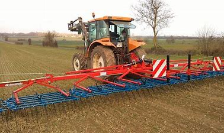

Les écosystèmes et la biodiversité sont mieux préservés. Les estimations actuelles prédisent des bénéfices annuels d'environ 0,25% du PIB en 2050, résultant principalement de la réduction de la déforestation et d'une amélioration des pratiques agricoles. Vivrons-nous mieux en 2050 que nos prédécesseurs en 1900 ?
Le débat sur l'évolution du monde, que ce soit en bien ou en pire, n'est pas nouveau. Ce sujet a été longuement débattu par les scientifiques et les philosophes depuis plusieurs siècles. De Malthus à The Limits to Growth, les pessimistes n'ont cessé d'argumenter sur la théorie d'un futur miné par la surpopulation, la famine et l'épuisement des ressources en réponse aux propos rassurants des optimistes. Les points de vue pessimistes ont beaucoup influencé les débats sur les politiques environnementales.